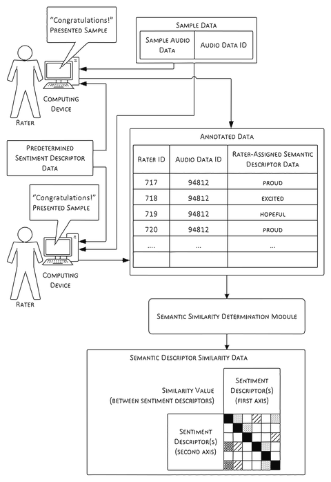
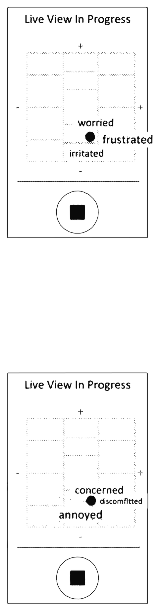
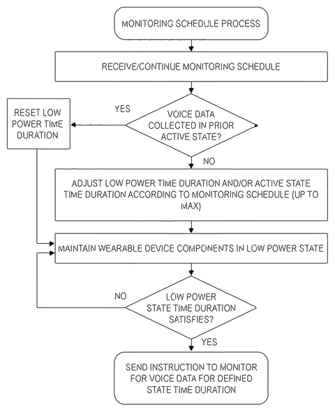

Halo Tone
The Halo Band sampled the wearer’s voice; the phone showed how it sounded to others, in words such as “Hopeful.”


- Role
- Led Tone end to end, from the listener panels to launch
- Patents
- Six US patents, granted 2022 to 2026
- Launched
- August 2020, in the United States
I led Halo Tone end to end: how your voice sounds to others, analyzed on the phone. I defined what that meant, built the listener panels that taught the model, and set the audio sampling the band’s battery was designed around. Six US patents came from it.
What I decided
Took the training labels from listener panels
How a voice sounds to others is a judgment people make, so the model’s labels came from listener panels. I defined what the panels rated and how they were built.
Sampled the least audio a result needed
I worked back from the least audio a meaningful result needed. That became the hardware team’s requirement for the band’s battery and size. Three of the six patents describe this sampling.
Replaced four labels with two scores and words
The first model aimed at accuracy on four labels: happy, sad, low energy and high energy. Playing results back to customers did not work: people wanted to know what a result meant. So we moved to two continuous scores and plain words.
How it worked
No measure for how you come across
Social well-being affects long-term health, and there was no good measure of it. Tone began with a demo that placed the voices of two US presidents on two axes, energy and positivity. The two voices fell far apart.
Listeners rated the clips the model learned from
Panels of listeners rated short clips from happy to sad and from low to high energy. Their ratings became the labels the model learned from. Amazon said its employees rated tens of thousands of voices across US regions and demographic groups.

Two scores for every stretch of speech
The model gave each stretch of speech two scores: positivity, how happy or sad it sounded, and energy, how excited or tired. In live mode, the voice moved around a positivity and energy graph with each word.

Two scores, one word
Tone placed each voice reading on two scales, energy and positivity, and named its region with a word, such as content or irritated.
Illustration
The data as a table
| Word | Energy | Positivity | Other words |
|---|---|---|---|
| Excited | Higher | Higher | amused, delighted |
| Content | Lower | Higher | appreciative, caring |
| Worried | Lower | Lower | reserved, discouraged |
| Irritated | Higher | Lower | displeased, enraged |
Plain words for the day, such as “Hopeful”
Tone showed the day’s moments as plain words with times, such as “Hopeful” at 10:30 AM. Customers wanted to see how their voice varied, so we made that variation a measured dimension.

Sample just enough voice to save the battery
The band sampled speech at intervals through the day, which saved its battery. In the patents’ example, a wearable that listens nonstop lasts under 10 hours on a charge. One that sleeps between checks lasts 2 days or more.

Only the wearer’s voice, and no audio kept
I defined the path from band to phone and balanced its privacy and legal requirements so Tone could launch. The band sent short, encrypted segments to the phone, which kept only the wearer’s speech, analyzed it and deleted the audio. Only positivity and energy summaries reached Amazon’s cloud, and no one heard a recording.

Six US patents, by grant date
Launch
“I found the Tone feature to be eerily accurate”Android Central’s review of Amazon Halo, September 2020
Tone launched with Amazon Halo on 27 August 2020, in early access in the United States.
What came next
Amazon’s next band, Halo View, announced in September 2021, had no microphone; its owners ran Tone live on the phone. Thirteen later US patents, from companies including Oracle, T-Mobile USA and Advanced Micro Devices, cite the six from this work.